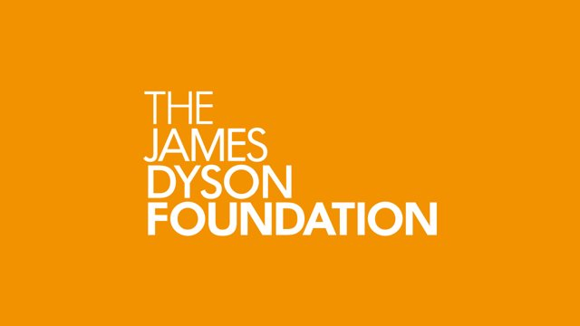

Gift in kindJames Dyson Foundation
A Dyson Supersonic hair dryer, given as the prize for a raffle whose proceeds go into our research fund.
Thank you
Thank you to everyone who has backed this charity.
We are grateful for the support that lets us keep going, and we are glad to say so in public when we have permission to use a name.
Trust given early is the rarest kind, because there's nothing yet to base it on. Every funder on this page gave it anyway, and we want everyone who follows to know their names.

Gift in kindA Dyson Supersonic hair dryer, given as the prize for a raffle whose proceeds go into our research fund.
Thank you to everyone who gives in their own name, and to everyone who gives without one. Any gift is recorded, held and spent under the same rules as a grant from a trust, and it counts every bit as much.
We never publish your name without your permission. If you'd like to be thanked here, email info@fightingbattendisease.org and tell us how you'd like your name to appear. You can ask us to take it down at any time.
When a gift is for research, four promises come with it:
Research we fund is published whether the results are positive or negative, and every paper acknowledges the charity's support. As findings come in, we'll share them on Research & updates.
If you would like to stand with them, you can give today.